¿Qué anticipa la elección presidencial
sobre el medio término?
Predicción de la Cámara de Representantes de EE. UU. para el 3 de noviembre de 2026, a partir de los resultados oficiales de 2004–2024.
Pregunta de investigación e hipótesis
¿Cuánto anticipa el resultado de la elección presidencial anterior el voto a la Cámara en el medio término siguiente, y cuánto pierde en ella el partido del presidente?
H1 · Anticipación
El voto presidencial de cada estado anticipa su voto a la Cámara dos años después.
H2 · Castigo de medio término
El partido del presidente pierde votos, sea demócrata o republicano.
H3 · Regresión
Pierde más donde estaba más fuerte: los resultados extremos vuelven hacia el 50 %.
Variable objetivo: house_dem_share_2p = votos D / (votos D + votos R) a la Cámara, por estado.
De dónde salen las hipótesis
Modelos de fundamentos
Fair (1978), Abramowitz (1988), Tufte (1975): predecir con variables estructurales, sin encuestas. Nuestro trabajo construye esa capa con resultados electorales.
Pérdida en medio término → H2
Surge and decline (Campbell): sin presidente en la boleta, no van los votantes que arrastró. Balance (Erikson) y referéndum (Tufte).
Nacionalización → H1
Cae el voto dividido y el valor del legislador en ejercicio (Jacobson; Abramowitz & Webster; Hopkins). El voto a la Cámara se parece cada vez más al presidencial.
De votos a bancas
Gelman & King (1994): la curva votos-bancas y el sesgo de los mapas. La usamos para pasar de la cuota de voto a bancas.
Cada fila une dos elecciones del mismo estado
Presidencial anterior → predictores _prev
Voto a Presidente, voto a la Cámara, bancas, distritos disputados. Lo que se sabe antes de votar.
Medio término → resultado
Cuota D a la Cámara, bancas ganadas y cambio del partido del presidente.
| Fila | Presidencial | Presidente | Uso |
|---|---|---|---|
| 2006 | 2004 | Bush (R) | entrenar |
| 2010 | 2008 | Obama (D) | entrenar |
| 2014 | 2012 | Obama (D) | entrenar |
| 2018 | 2016 | Trump (R) | entrenar |
| 2022 | 2020 | Biden (D) | entrenar |
| 2026 | 2024 | Trump (R) | predecir |
- 50 estados × 6 años = 300 filas × 42 columnas. Panel: mismas unidades en el tiempo.
- Fuentes oficiales: FEC (2004–2022, presidencial 2024) y Clerk de la Cámara (2024).
- Estado y no distrito: las fronteras no cambian con cada redistribución.
- Proporciones, no votos absolutos: los estados tienen tamaños muy distintos.
El trayecto del proyecto
Primer dataset
Panel 2016–2026 por ciclo. Solo 2 medio término: el efecto se podía describir, no estimar.
Rediseño
Filas = medio término 2006–2022, predictores de la presidencial anterior. 5 medio término, presidentes de ambos partidos.
Validación
435 distritos y bancas oficiales en las 11 elecciones. Encontró errores en las fuentes que corregimos.
Exploratorio
Preprocesamiento, descriptivo y correlaciones. Generó las hipótesis y una línea base de 4,3 pp.
Predictivo
Modelos validados dejando afuera cada año, contraste de H1–H3 y predicción 2026.
Lo que encontró la validación en las fuentes del FEC
• Luisiana: sumaba primera vuelta y balotaje (votantes contados dos veces).
• Nevada 2014: votos republicanos y de otros partidos intercambiados.
• Etiquetas de partido por época: DFL, DNL, GOP, D(UND).
• Filas de fusión duplicadas (NY 2004) y voto preferencial de Maine.
Faltantes con explicación y atípicos reales
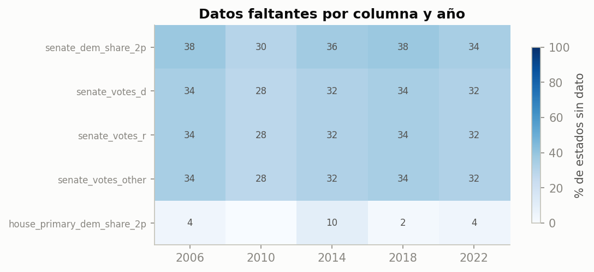
Estructurales: el Senado no se elige en todos los estados. Reales: internas que no existen (Luisiana, convenciones). Los predictores _prev están completos. No se imputa.
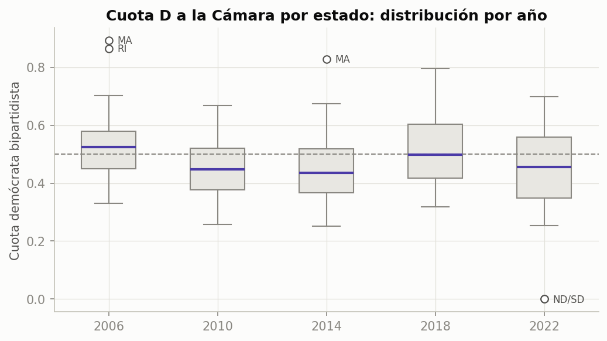
Los atípicos (MA, RI, ND, SD) son estados donde un partido no presentó candidato. Son reales: se conservan y se marca todos_disputados.
El partido del presidente perdió bancas las cinco veces

| Año | Pres. | Bancas perdidas |
|---|---|---|
| 2006 | R | 30 |
| 2010 | D | 64 |
| 2014 | D | 13 |
| 2018 | R | 42 |
| 2022 | D | 9 |
Con presidentes de los dos partidos. El tamaño de la pérdida varía mucho: esa es la "ola nacional".
Pocos estados competitivos y un swing casi siempre negativo
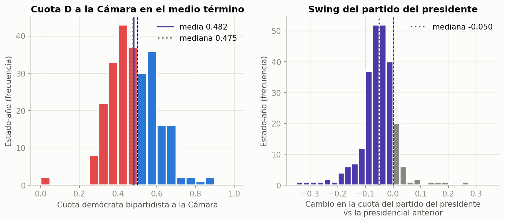
La cuota D es simétrica (media ≈ mediana). El desbalance avisa que el modelo tiene pocos ejemplos justo donde se decide la mayoría.
La presidencial anterior se mueve junto con el medio término
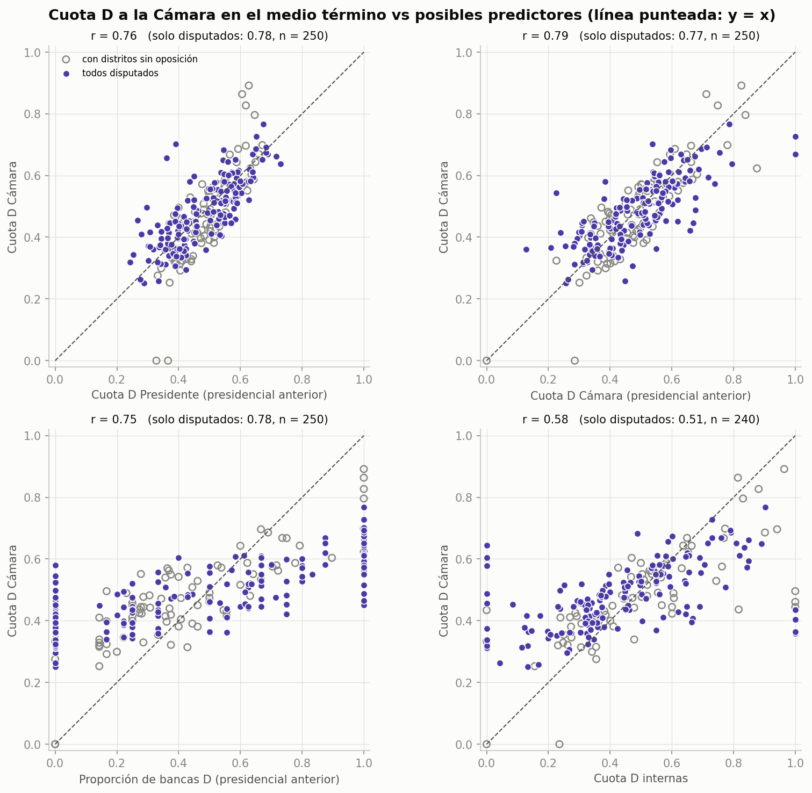
| Predictor | Pearson | Spearman |
|---|---|---|
| Cuota D Cámara anterior | 0,79 | 0,80 |
| Cuota D Presidente anterior | 0,76 | 0,80 |
| Bancas D anteriores | 0,75 | 0,77 |
| Internas D | 0,58 | 0,63 |
Pearson mide relación lineal; Spearman, monótona por rangos. Que coincidan indica que la relación es aproximadamente lineal y no la generan unos pocos extremos.
Matriz de correlación: qué entra al modelo y qué no
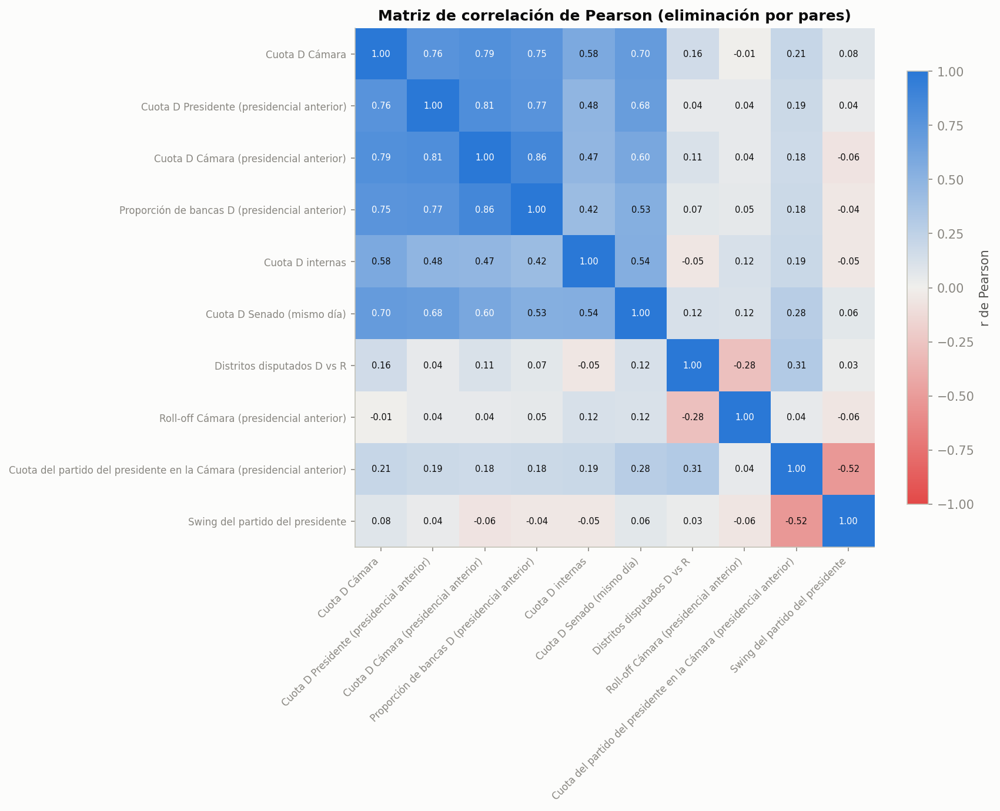
- Los tres predictores
_prevcorrelacionan entre sí (0,77–0,86): miden lo mismo desde ángulos distintos. Por eso se combinan, no se suman a ciegas. - Senado (0,70): se vota el mismo día. Es otro resultado, no un predictor.
- Internas (0,58): tienen señal, pero no están para 2026 en estas fuentes.
- Roll-off (≈ 0) y distritos disputados (0,16): casi sin relación lineal.
Los distritos sin oposición inflan la correlación de la Cámara
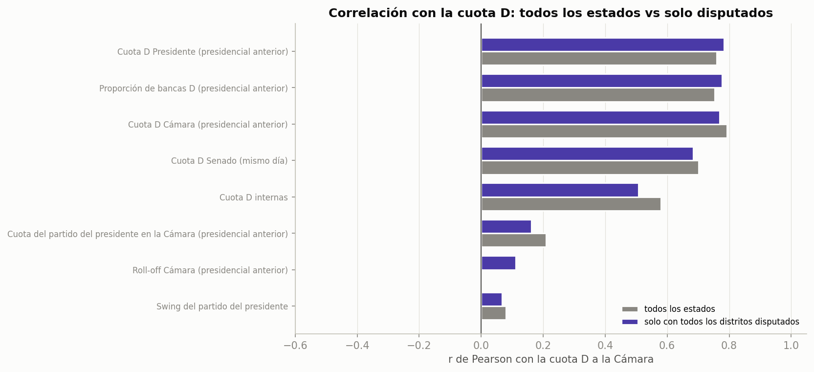
| Predictor | Todos | Disputados |
|---|---|---|
| Cámara anterior | 0,79 | 0,77 |
| Presidente anterior | 0,76 | 0,78 |
Un estado con un distrito sin rival suele tenerlo en las dos elecciones: la misma distorsión aparece en el predictor y en el resultado. En los estados disputados, el voto presidencial es el mejor predictor.
La relación se hizo más fuerte con el tiempo
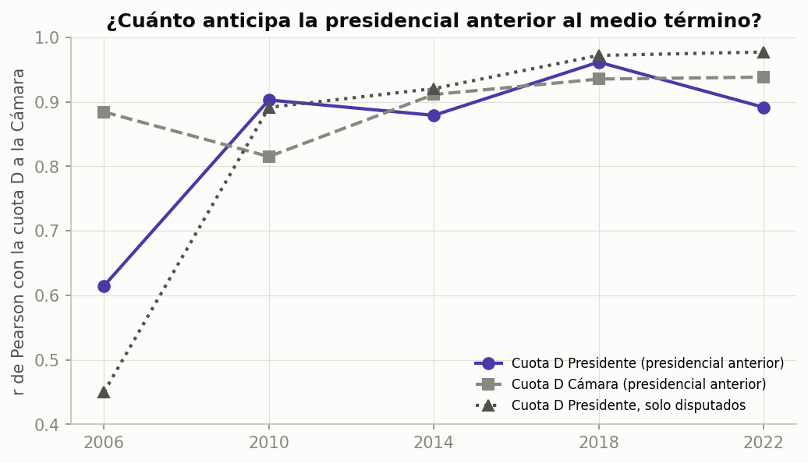
En los estados disputados de 2018 y 2022 llega a 0,97–0,98. Es la nacionalización del voto medida con nuestros datos: cada vez menos voto dividido.
Para 2026, la relación reciente es la más relevante.
El partido del presidente pierde votos en los cinco medio término
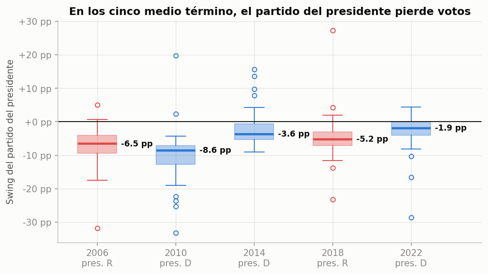
| Año | Swing mediano | Estados en que pierde |
|---|---|---|
| 2006 R | −6,5 pp | 96 % |
| 2010 D | −8,6 pp | 96 % |
| 2014 D | −3,6 pp | 78 % |
| 2018 R | −5,2 pp | 90 % |
| 2022 D | −1,9 pp | 70 % |
El signo nunca cambia; el tamaño sí. Por eso el modelo mide todo desde el partido del presidente.
Pierde más donde estaba más fuerte
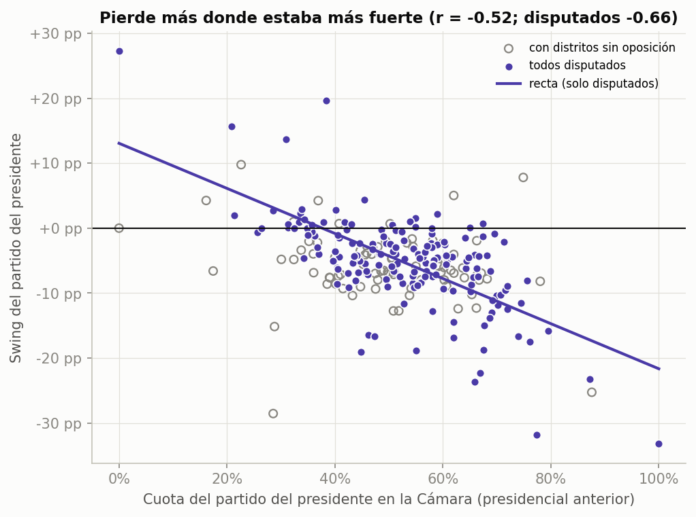
Consistente con surge and decline (se van los votantes que arrastró la presidencial) y con regresión a la media.
Conclusión para el modelo: el castigo no es igual en todos los estados.
Las correlaciones que encontramos y qué hicimos con cada una
| Relación | r | Lectura | Decisión para el modelo |
|---|---|---|---|
| Presidente anterior ↔ Cámara medio término | 0,76 | Fuerte y limpia | Predictor principal (H1) |
| Cámara anterior ↔ Cámara medio término | 0,79 | Inflada por distritos sin rival | Predictor, junto con el presidencial |
| Bancas D anteriores ↔ Cámara | 0,75 | Redundante con las cuotas | Se incluye, peso chico |
| Presidente anterior, por período | 0,68 → 0,86 | Nacionalización | Usar presidentes de ambas épocas |
| Cuota previa del partido del pres. ↔ su swing | −0,52 | Regresión a la media | Pendiente < 1 (H3) |
| Senado mismo día ↔ Cámara | 0,70 | Simultáneo | Excluido: no se conoce antes |
| Internas D ↔ Cámara | 0,58 | Señal moderada | Excluido: no hay datos 2026 |
| Roll-off / distritos disputados ↔ Cámara | ≈ 0 / 0,16 | Sin relación lineal | Solo como control |
Correlación no implica causalidad: estas relaciones eligen variables, no prueban causas.
Antes de modelar: ¿cuánto erra una regla simple?
| Regla ingenua | Error medio por estado |
|---|---|
| Repetir la Cámara de la presidencial anterior | 6,56 pp |
| Usar el voto presidencial anterior | 6,00 pp |
| Cámara anterior + castigo medio de los otros años | 4,75 pp |
| Presidencial anterior + castigo medio de los otros años | 4,31 pp |
| Swing uniforme con el cambio nacional real (trampa: usa el futuro) | 3,81 pp |
Un modelo que no baje de 4,3 pp no aporta nada sobre "presidencial anterior más castigo promedio".
El castigo de cada año se calcula con los otros cuatro: no se usa información que no se conocía antes de votar.
Tres decisiones de diseño
1 · Todo desde el partido del presidente
Si es D se usa la cuota D; si es R, 1 − cuota D. Así el mismo modelo aprende el castigo con presidentes de los dos partidos. Centramos en 0,5: el intercepto es el castigo en un estado parejo.
2 · Solo lo que se sabe antes de votar
Predictores _prev de la presidencial anterior, disponibles también para 2026. Senado e internas quedan afuera.
3 · Validar dejando afuera un medio término entero
Las 50 filas de un año comparten la ola nacional: no son independientes. Mezclarlas al azar filtraría información de la ola.
Cinco modelos contra las líneas base
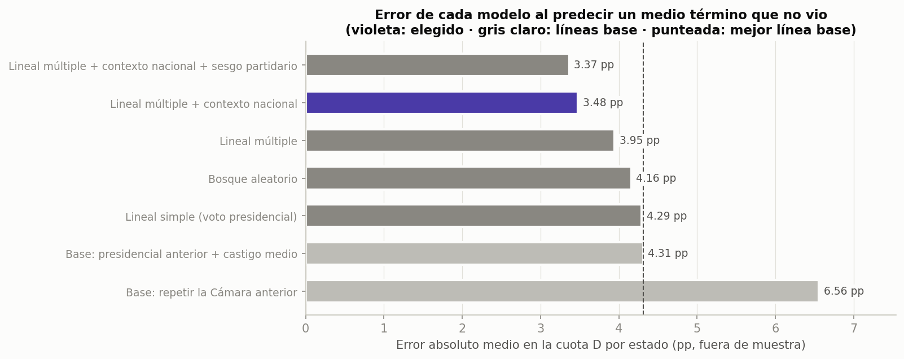
Regla de un error estándar: el modelo con sesgo partidario erra 0,11 pp menos, pero esa diferencia está dentro del error de estimación y suma un parámetro estimado con solo 5 olas. Elegimos el más simple.
El bosque aleatorio no supera a la regresión lineal: con 250 filas y relaciones casi lineales, la flexibilidad extra no paga.
Las tres hipótesis se sostienen al sacar cualquier año
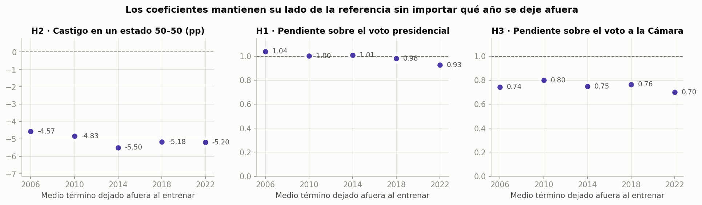
Pendiente ≈ 1 (0,93–1,04) sobre el voto presidencial: un punto más en la presidencial es un punto más en el medio término.
Castigo de −4,6 a −5,5 pp en un estado parejo, en los cinco pliegues.
Pendiente 0,70–0,80 sobre el voto a la Cámara, pero ≈ 1 sobre el presidencial: lo que regresa es el voto a la Cámara hacia la base presidencial.
Regresión lineal múltiple con contexto nacional
+ 0,39 · (presidencial previa − 0,5) + 0,42 · (Cámara previa − 0,5)
+ 0,06 · (bancas previas − 0,5) + 0,03 · distritos disputados previos
− 0,81 · (cuota nacional previa del partido del pres. − 0,5)
Presidencial + Cámara
Se reparten el peso (0,39 + 0,42 ≈ 0,8): combinar las dos medidas compensa la distorsión de los distritos sin rival.
Contexto nacional
Cuanto mejor le fue al partido del presidente en todo el país, más pierde después: surge and decline a escala nacional.
Para 2026
R sacó 51,3 % nacional en 2024: el término nacional suma ~1 pp de castigo extra a los republicanos.
¿Dónde se equivoca?
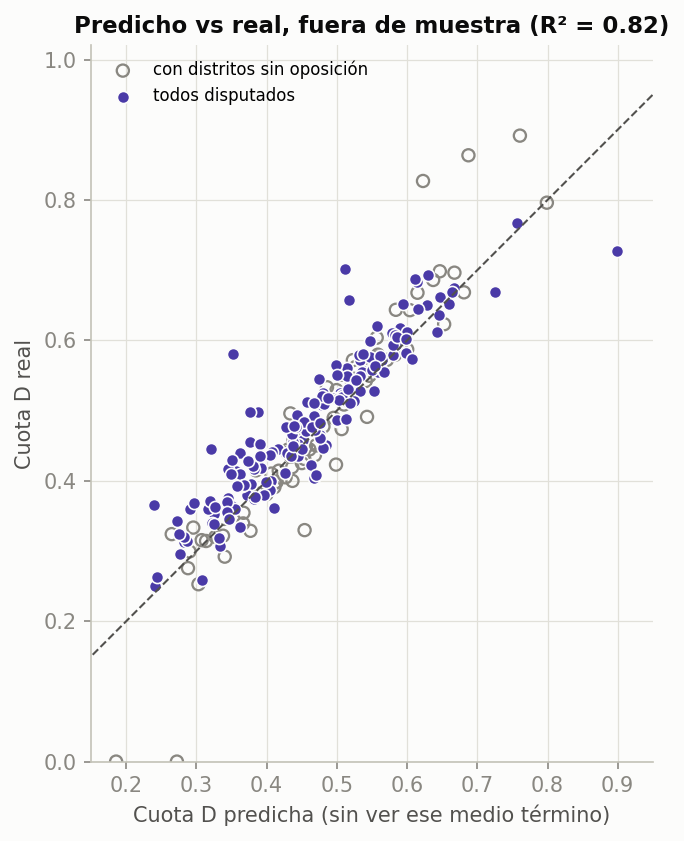
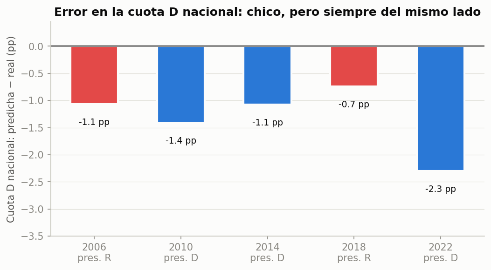
- R² = 0,82 fuera de muestra; acierta qué partido gana el voto del estado en el 92 %.
- Los peores casos son estados sin oposición (puntos grises).
- El error nacional es chico (1–2 pp) pero siempre subestima al D: si se repite, 2026 sería aún más demócrata.
De votos a bancas
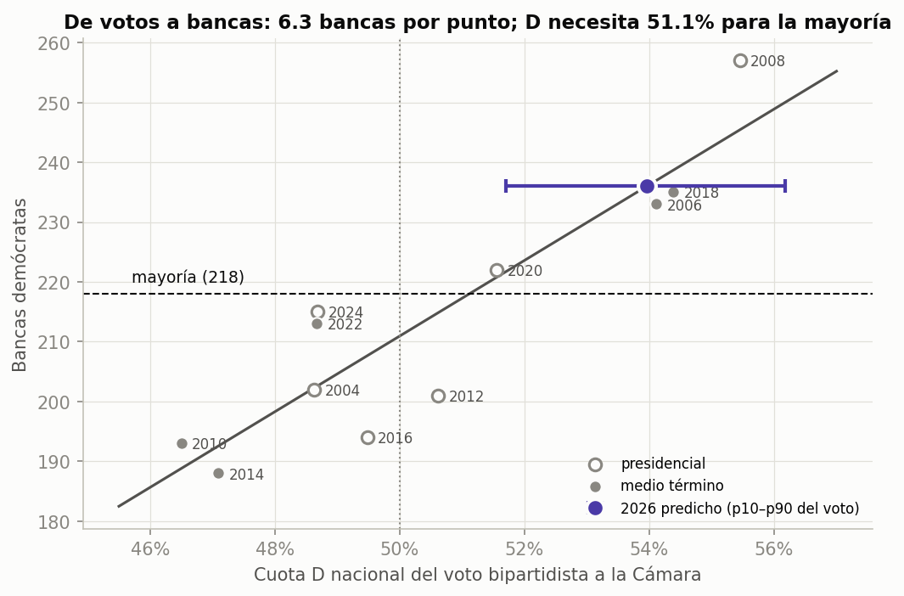
Recta sobre las 11 elecciones 2004–2024, con error de ±11 bancas. Probamos primero una curva por estado: exageraba las olas y erraba hasta 20 bancas, así que la descartamos.
Predicción para el 3 de noviembre de 2026
(p10–p90: 51,7–56,2 %; 2024: 48,7 %)
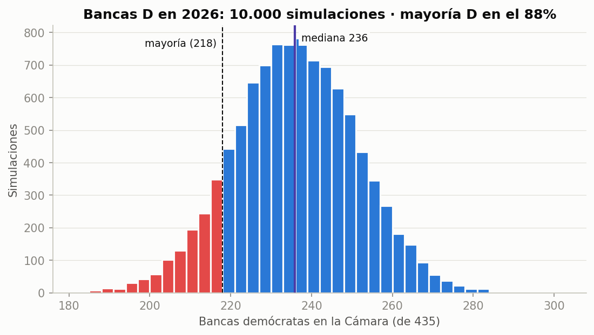
La simulación suma tres errores medidos fuera de muestra: la ola nacional (±1,4 pp), el desvío de cada estado (±4,9 pp) y la curva votos-bancas (±11 bancas).
46 de 50 estados se mueven hacia los demócratas

Siete estados pasan a cuota D > 50 %
| Estado | Bancas | 2024 | 2026 |
|---|---|---|---|
| Michigan | 13 | 49,4 % | 53,6 % |
| Pensilvania | 17 | 49,0 % | 53,3 % |
| Nevada | 4 | 43,5 % | 53,3 % |
| Wisconsin | 8 | 48,5 % | 52,1 % |
| Georgia | 14 | 47,4 % | 52,0 % |
| Arizona | 9 | 48,0 % | 51,5 % |
| Carolina del Norte | 14 | 44,8 % | 50,8 % |
Son los estados "bisagra" de las presidenciales. Los que bajan (VT, MA) tenían distritos sin candidato R en 2024.
Limitaciones
Cinco olas
Hay 250 filas, pero la ola nacional se observa solo 5 veces. El intervalo de incertidumbre es orientativo.
Solo fundamentos electorales
Sin encuestas, aprobación presidencial ni economía, que explican el tamaño de cada ola.
Mapas 2025–2026
Texas, California, Missouri, Carolina del Norte, Ohio y Utah redibujaron distritos. Cambian la curva votos-bancas, no la cuota de voto.
Distritos sin oposición
Distorsionan la cuota del estado y son los peores errores. Para 2026 todavía no sabemos cuáles habrá.
Además: falacia ecológica (las correlaciones son entre estados, no entre votantes) y sistemas especiales (top-two en CA y WA, voto preferencial en ME y AK).
Conclusiones
- La presidencial anterior anticipa el medio término (r = 0,76, y 0,86 en los años recientes), y la relación es casi uno a uno.
- El partido del presidente pierde: unos 5 pp en un estado parejo, con presidentes de los dos partidos.
- El voto a la Cámara vuelve hacia el 50 %, y más cuanto mejor le había ido al partido del presidente en todo el país.
- Un modelo lineal simple, bien validado, baja el error de 4,3 a 3,5 pp. Un modelo más complejo no lo mejora.
- Para 2026: 54 % D, ~236 bancas, mayoría D en el 88 % de las simulaciones.
Próximos pasos
- Sumar encuestas genéricas y aprobación presidencial para estimar la ola.
- Pasar a nivel distrito con los mapas 2026.
- Comparar con el resultado real el 3 de noviembre.